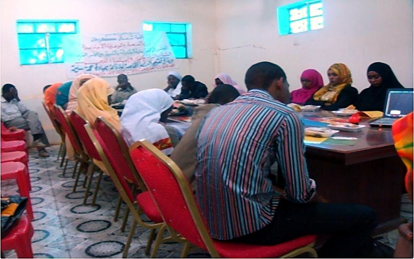
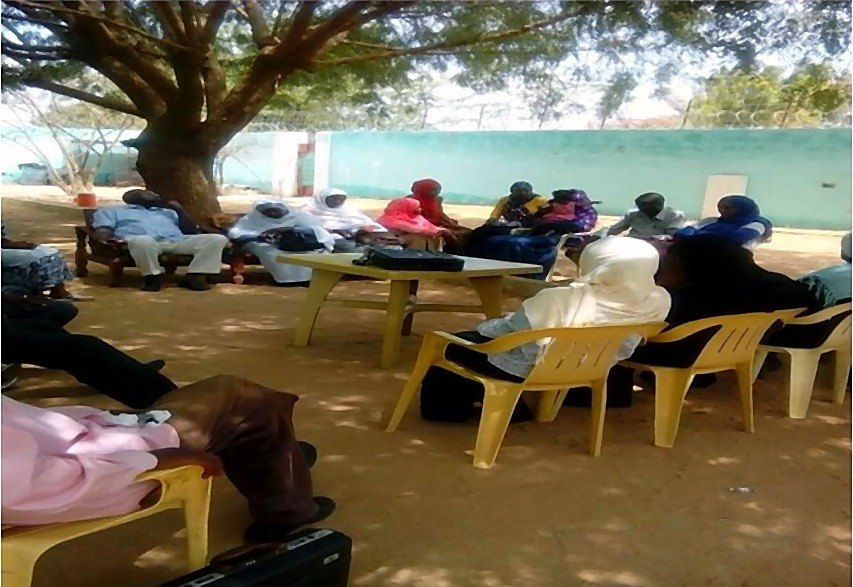

بحوث مستقلة وتنمية مجتمعية · السودان · منذ ٢٠٠٣
أدلّة نجمعها مع المجتمعات التي نخدمها.
يقدّم مركز إبسا للبحوث خدمات البحث والتحليل الإحصائي والرصد والتقييم للحكومات والمنظمات الدولية والمنظمات غير الحكومية والجامعات والقطاع الخاص. وما يتوصّل إليه من نتائج يعيده إلى المجتمعات السودانية عبر التعليم والتوعية.

تيّاران، ومركزٌ واحد.
في الخرطوم يلتقي النيل الأزرق بالنيل الأبيض. وعلى الفكرة نفسها قام مركز إبسا: البحث الرصين والانخراط المجتمعي أقوى حين يجريان في تيّار واحد.
بيانات موثوقة لقرارات مستنيرة
منذ عام ٢٠٠٣ ينتج المركز المسوح والإحصاءات والتقييمات التي تعتمد عليها الحكومات والمنظمات الدولية وغير الحكومية في التخطيط والتمويل وتصحيح المسار.
- بحوث اجتماعية وصحية واقتصادية وتنموية
- تصميم المسوح وجمع البيانات ميدانياً
- التحليل الإحصائي والرصد والتقييم
- توصيات سياساتية قائمة على الأدلة
معرفة تعود إلى الناس
لا تبقى نتائج البحث حبيسة التقارير. فمن خلال ورش العمل والبرامج التعليمية وحملات التوعية، يحوّل المركز الأدلة إلى حوارات تستطيع المجتمعات أن تعمل بها.
- الصحة العامة والممارسات الثقافية
- المساواة بين الجنسين وحماية الطفل
- الأعراف الاجتماعية وحقوق الإنسان
- إنهاء تشويه الأعضاء التناسلية الأنثوية
«ينبغي ألّا يكتفي البحث بإنتاج المعرفة، بل أن يمكّن المجتمعات من تحسين نوعية حياتها.»
المبدأ التأسيسي لمركز إبسا
ما نقدّمه
يُصمَّم كل عمل حول القرار الذي يُفترض أن يستنير به. وهذه هي الخدمات التي صقلها المركز عبر أكثر من عقدين من العمل في السودان.
-
تصميم البحوث وبحوث السياسات
دراسات قائمة على الأدلة تُبنى حول سؤال حقيقي في السياسات أو البرامج، من مراجعة الأدبيات إلى التوصيات النهائية.
المخرجاتبروتوكول الدراسة · تقرير فني · موجز سياسات -
تصميم المسوح
استبانات وأُطر معاينة واختبارات قبلية، تُعدّ بالعربية والإنجليزية لتصل الأسئلة إلى المستجيبين بلغة طبيعية.
المخرجاتاستبانة · خطة معاينة · دليل الباحث الميداني -
جمع البيانات
فرق ميدانية مدرَّبة تنفّذ مسوح الأسر ومقابلات المُخبرين الرئيسيين ومجموعات النقاش المركّزة وجهاً لوجه، داخل المجتمعات نفسها.
المخرجاتقاعدة بيانات منقّاة · تقرير ميداني · سجل جودة البيانات -
التحليل الإحصائي
تحليل وصفي واستدلالي وترجيح وبناء مؤشرات، يُعرض بحيث يقرأ غير المتخصص النتيجة ويثق بها.
المخرجاتجداول التحليل · مجموعة مؤشرات · رسوم بيانية -
الرصد والتقييم
دراسات خط الأساس والمنتصف والنهاية، وأطر النتائج والتقييمات التي تُخبر الشركاء بما ينجح وما يحتاج إلى تغيير.
المخرجاتإطار الرصد والتقييم · تقرير تقييم · موجز تعلُّم -
التوصيات والنشر
توصيات عملية لصنّاع القرار، ونتائج تعود إلى المجتمعات بلغة واضحة عبر الجلسات التعريفية وورش العمل.
المخرجاتمذكّرة توصيات · جلسة تعريفية مجتمعية · عرض تقديمي
أربعة مجالات، ومنهج واحد.
الانضباط نفسه في دقّة المعاينة واحترام المستجيب وأمانة التحليل يسري في كل مجال يعمل فيه المركز.
الاجتماعي
الأعراف الاجتماعية والممارسات الثقافية والنوع الاجتماعي وحماية الطفل، والظروف المعيشية الكامنة خلفها.
الصحي
المعارف والاتجاهات والممارسات الصحية، والوصول إلى الخدمات، ونتائج تغيير السلوك.
الاقتصادي
سبل العيش والأسواق ودخل الأسرة والأثر الاقتصادي للبرامج والسياسات.
التنموي
رصد البرامج وتقييمها عبر القطاعات، من أجل تنمية مستدامة تبقى بعد انتهاء المشروع.
من الميدان
البيانات الجيدة تُجمع وجهاً لوجه. باحثو المركز الميدانيون يعملون في الأسواق والورش والبيوت حيث تجري الحياة اليومية فعلاً.


مدرَّبون، من أهل المكان، ومسؤولون
يستقطب المركز فرقه الميدانية ويدرّبها، وتتحدث لغات المجتمعات التي تزورها، وتلتزم ببروتوكولات مكتوبة للموافقة والخصوصية وجودة البيانات.
كيف تسير الدراسة
من أول اجتماع لتحديد النطاق إلى آخر جلسة تعريفية مع المجتمع، تغذّي كل مرحلة ما بعدها. والخطوة الأخيرة هي ما يميّز المركز.
تحديد النطاق
الاتفاق على القرار الذي ستخدمه الأدلة، والمجتمع المستهدف، والجدول الزمني، والميزانية.
التصميم
استراتيجية المعاينة، والأدوات بالعربية والإنجليزية، وإجراءات الأخلاقيات والموافقة.
الجمع الميداني
باحثون مدرَّبون يجمعون البيانات وجهاً لوجه، مع فحوص جودة يومية.
التحليل
تنقية البيانات والترجيح والتحليل الإحصائي وعرض النتائج بوضوح.
التوصيات
توصيات عملية مرتّبة بالأولوية، مكتوبة لمن سينفّذها.
العودة إلى المجتمع
تعود النتائج إلى المشاركين عبر الجلسات التعريفية وورش العمل وجلسات التوعية.
الانخراط المجتمعي
معرفة تعود إلى المجتمع.
يقدّم المركز برامج تعليمية وورش عمل وحملات توعية حول القضايا التي تشكّل حياة الناس، تقودها الأدلة وتقوم على المشاركة. وتُنشر النتائج ليستفيد منها المجتمع والممارسون والشركاء.
- الصحة العامة
- الممارسات الثقافية
- الأعراف الاجتماعية
- المساواة بين الجنسين
- حماية الطفل
- حقوق الإنسان

إنهاء تشويه الأعضاء التناسلية الأنثوية بالأدلة
أطول برامج المركز عمراً يتناول تشويه الأعضاء التناسلية الأنثوية. ويتعامل معه المركز بوصفه مسألة بحثية لا رسالة صحية وحسب، فيجمع بين التوعية والتسويق الاجتماعي ودراسات تغيير السلوك التي تقيس ما يُحدث التغيير فعلاً.
ويمتد المنهج نفسه إلى الممارسات الضارة عموماً: تقاليد متوارثة تستمر دون سند علمي أو اجتماعي كافٍ. يبحث المركز في ما يُبقي الممارسة قائمة، ويختبر ما يغيّرها، ثم يعيد النتائج إلى الأسر والمجتمعات التي تملك قرار استمرارها من عدمه.





عن المركز
مؤسسة بحثية سودانية، منذ عام ٢٠٠٣.
مركز إبسا للبحوث مؤسسة بحثية سودانية تأسّست في السودان، ويمتد عملها وشراكاتها في أنحاء السودان وخارجه. أسّستها الدكتورة ندى الأسد عام ٢٠٠٣ لتكون منظمة مستقلة للبحث والتنمية المجتمعية.
وعلى مدى أكثر من عشرين عاماً بنى المركز خبرة عميقة في البحوث الاجتماعية والصحية والاقتصادية والتنموية، يقدّم بيانات موثوقة وتوصيات عملية تدعم صنع القرار المستنير والتنمية المستدامة. ومن خلال البحث والتعليم والتوعية يكون المركز أيضاً منبراً تصل عبره الأدلة إلى من يستطيع العمل بها.
- التأسيس
- ٢٠٠٣
- المؤسِّسة
- د. ندى الأسد
- المنشأ
- تأسّس في السودان
- الصفة
- مركز بحوث مستقل
- النطاق
- أنحاء السودان وخارجه
- اللغات
- العربية · الإنجليزية


المؤسِّسة والمديرة
د. ندى الأسد
باحثة · محاضِرة · مؤسِّسة مركز إبسا للبحوث
أسّست الدكتورة ندى الأسد مركز إبسا عام ٢٠٠٣ وتقوده منذ ذلك الحين. درست الاقتصاد القياسي والإحصاء الاجتماعي في جامعة الخرطوم، ثم نالت الماجستير في الاقتصاد من الجامعة نفسها، وأكملت الدكتوراه في إدارة الأعمال من الجامعة الأوروبية في قبرص عام ٢٠٢٣.
بدأت مسيرتها في برنامج الأمم المتحدة الإنمائي والوكالة الأمريكية للتنمية الدولية بالخرطوم. وحاضرت في جامعة الخرطوم وجامعة الأحفاد بأم درمان، وعملت مستشارة بحثية لليونيسف من ٢٠١٢ إلى ٢٠١٧.
يتركّز بحثها على الممارسات الاجتماعية التي تنتهك حقوق الإنسان، مستخدمةً نمذجة المعادلات البنائية والتحليل الإحصائي لاختبار ما إذا كانت البرامج تُغيّر السلوك فعلاً، وما الذي يحرّك هذا التغيير. ونُشر عملها عن تشويه الأعضاء التناسلية الأنثوية في Global Health Journal وعُرض في مؤتمرات دولية.

السيرة الذاتية
التعليم
- ١٩٩٢بكالوريوس الاقتصاد القياسي والإحصاء الاجتماعي، جامعة الخرطوم
- ٢٠٠٢ماجستير الاقتصاد، جامعة الخرطوم
- ٢٠٠٤دبلوم التسويق، غرفة تجارة وصناعة لندن
- ٢٠٢٣دكتوراه إدارة الأعمال، الجامعة الأوروبية في قبرص
المسيرة المهنية
- ١٩٩٣–٩٤منسّقة مشروع، برنامج الأمم المتحدة الإنمائي
- ١٩٩٤–٩٥مديرة مكتب، الوكالة الأمريكية للتنمية الدولية
- ٢٠٠٣ –مؤسِّسة ومديرة مركز إبسا للبحوث
- ٢٠١٠محاضِرة، جامعة الخرطوم
- ٢٠١١–١٢محاضِرة، جامعة الأحفاد، أم درمان
- ٢٠١٢–١٧مستشارة بحثية، اليونيسف
مجالات البحث والإسهامات
- الممارسات الاجتماعية التي تنتهك حقوق الإنسان، ومنها تشويه الأعضاء التناسلية الأنثوية
- نمذجة المعادلات البنائية والتحليل الإحصائي لتغيّر السلوك
- تقييم فعالية البرامج مع اليونيسف ومنظمات غير حكومية أخرى
- نشرت في Global Health Journal، وقدّمت أوراقاً في WASET ٢٠٢٣ والمؤتمر العالمي لدراسات النوع الاجتماعي والمرأة، مانشستر ٢٠٢٤
- مجالس بحثية للدكتوراه في برلين (٢٠١٩) ونيقوسيا (٢٠٢٠) وقبرص (٢٠٢٢)
- ORCID 0009-0007-1058-7174
تواصل معنا
لنبدأ الحديث.
أخبرنا بالقرار الذي تحتاج إلى أدلة لأجله، أو بالمجتمع الذي تريد الوصول إليه، ونقترح عليك طريقة العمل.
اطلب بحثاً
مسوح وتحليل إحصائي ورصد وتقييم وبحوث سياسات، للمنظمات العاملة في السودان.
شارِكنا برامج مجتمعية
ورش عمل وبرامج تعليمية وحملات توعية في الصحة والمساواة بين الجنسين وحماية الطفل وإنهاء تشويه الأعضاء التناسلية الأنثوية.
تعاون بحثي
دراسات مشتركة مع الجامعات والمؤسسات البحثية، في السودان وعبر أفريقيا.